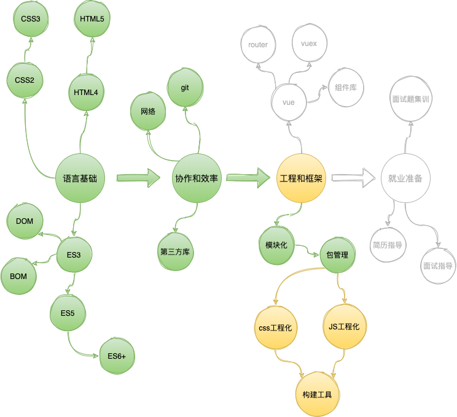
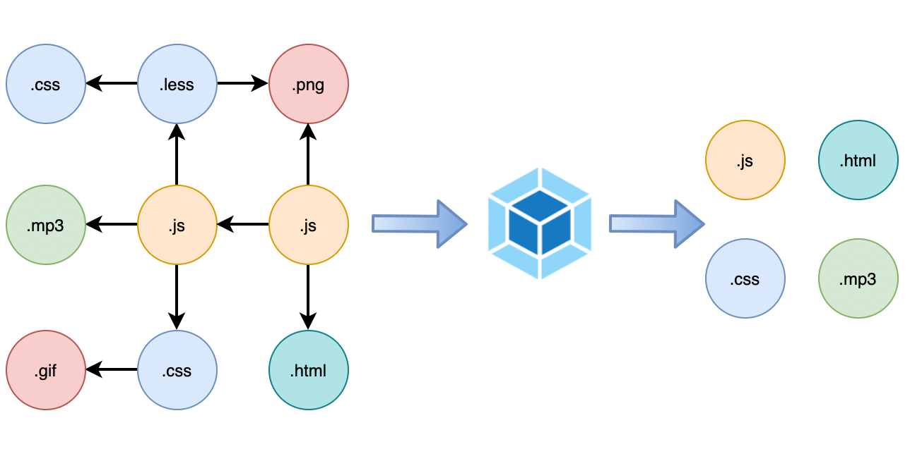
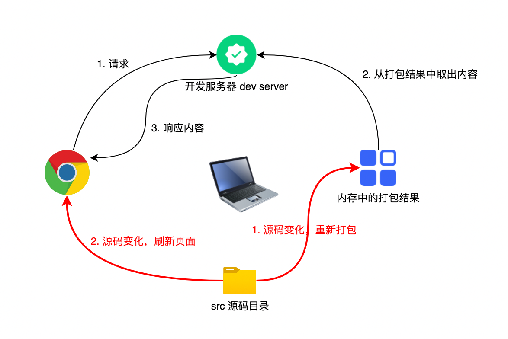
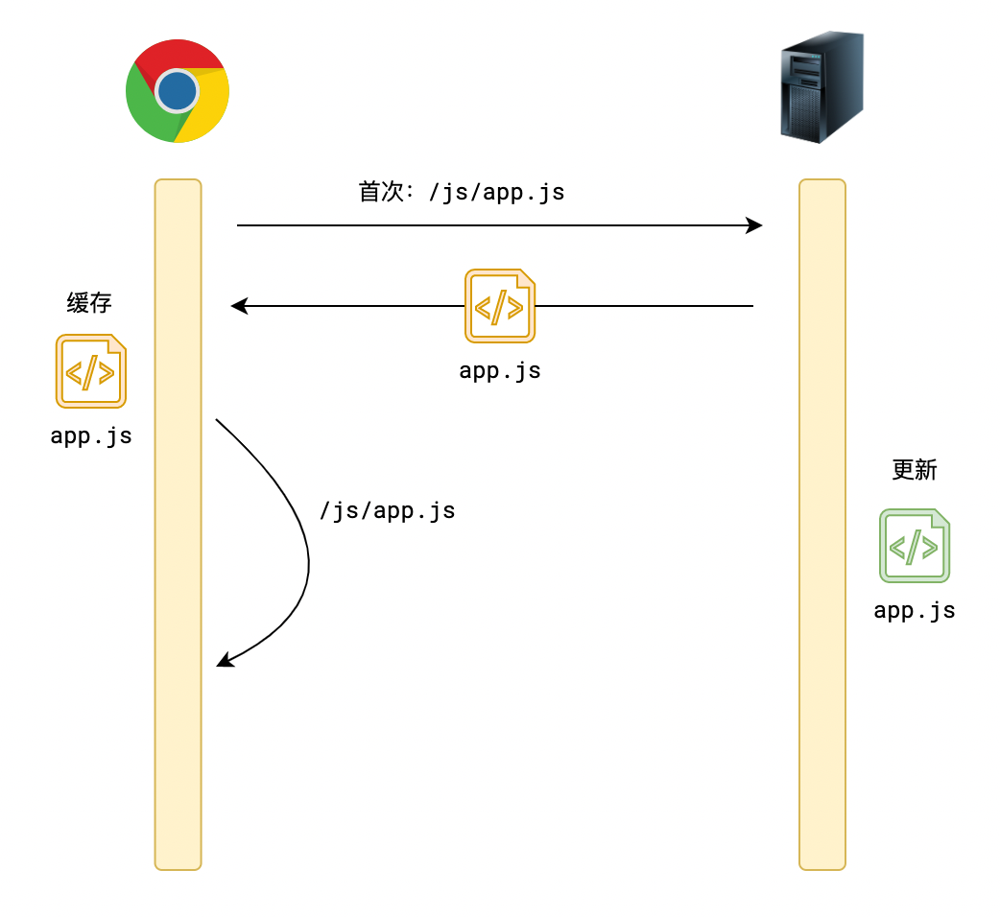
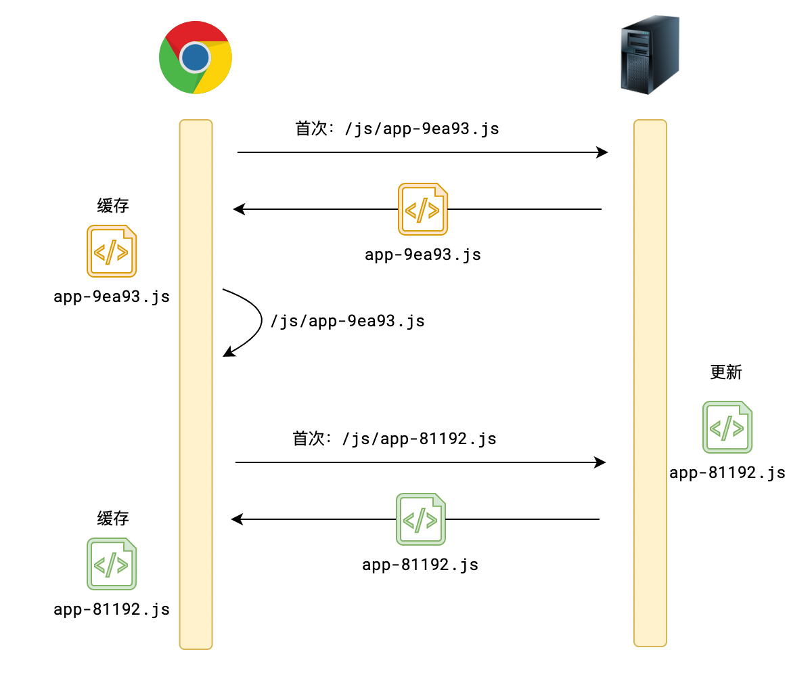
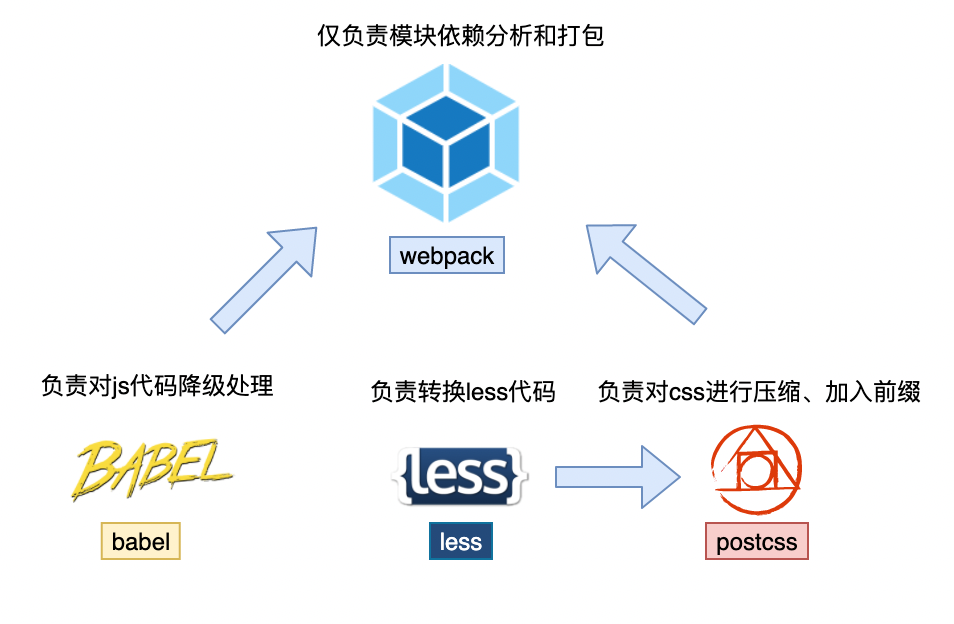

工程化，为复杂应用而生
本文为保持简单，牺牲了某些语言的准确性
核心
webpack 是用来搭建前端工程的
它运行在 node 环境中，它所做的事情，简单来说，就是打包

具体来说，就是以某个模块作为入口，根据入口分析出所有模块的依赖关系，然后对各种模块进行合并、压缩，形成最终的打包结果
在 webpack 的世界中，一切皆是模块
体验
按照习惯，所有的模块均放置在
src目录中
- 安装依赖
- 编写多个模块随意编写一些模块，可以是 js、图片、音视频，以入口模块为起点，形成依赖关系
- 运行
npm run build命令，进行打包 - 查看打包结果打包结果放置在 dist 目录中
通过上面的体验，可以发现，webpack 给我们带来了至少以下好处：
- 可以大胆的使用任意模块化标准无须担心兼容性问题，因为 webpack 完成打包后，已经没有了任何模块化语句
- 可以将一些非 JS 代码也视为模块这样可以对 css、图片等资源进行更加细粒度的划分
- 在前端开发中，使用 npm webpack 打包的过程中不会运行你的源代码；其中无论是你自己写的模块，还是通过 npm 安装的模块，webpack 一视同仁，统统视为依赖，最终合并到打包结果中
- 非常适合开发单页应用单页应用是前端用户体验最好的 web 应用所谓单页应用，是指只有一个 html 页面，页面中没有任何内容，所有的内容均靠 js 生成要优雅的实现单页应用，最好依托于前端框架，比如 vue、react
页面模板
对于单页应用而言，只有一个空白的页面，所有内容都靠 JS 代码创建
webpack 会自动生成一个页面，并且在页面中会自动加入对 js 和 css 的引用
它生成页面时，参考的是public/index.html，其称之为页面模板
public 目录
webpack 会非常暴力的将 public 目录中的所有文件（除页面模板外），复制到打包结果中
开发服务器
如果每次修改完代码，都要经过打包->运行，未免太过麻烦
在开发阶段，我们可以运行npm run serve命令获得更好的打包体验
该命令会让webpack启动一个开发服务器。
在这个阶段，webpack 并不会形成打包结果文件，而是把打包的内容放到内存中，当我们请求服务器时，服务器从内存中给予我们打包结果
与此同时，当源码发生变动时，webpack 会自动重新打包，同时刷新页面以访问到最新的打包结果

文件缓存
可以看到，除了页面外，其他的资源在打包完成后，文件名多了一些奇奇怪怪的字符
例如：js/app-9ea93.js
其中，9ea93这样的字符称之为hash，它会随着模块内容的变化而变化
源码内容不变，hash 不变；源码内容变化，hash 变化
之所以这样做，是因为生产环境中，浏览器会对除页面外的静态资源进行缓存
如果不设置 hash 值，一旦代码更新，浏览器还会使用之前缓存的结果，无法使用最新的代码

有了 hash 值之后，即可解决此问题

webpack 会在打包时自动处理 hash 值，并不会对我们写代码造成任何影响，但作为一个前端开发者，有必要了解这一点
资源路径
除代码和样式模块外，其他模块被视为资源模块
值得特别注意的是，资源模块在源代码中的路径和打包后的路径是不一样的，这就导致我们在编写代码的时候，根本无法知晓最终的路径
最常见的例子，就是在 css 中使用背景图片
.container {
/* 背景图使用了源码中的路径 */
backgroud: url("../assets/1.png");
}
它能正常工作吗？
它能！
因为 webpack 非常智能的发现了这一点，对于 css 中的路径，webpack 在打包时，会将其自动转换为打包结果的路径，比如，上面的代码在打包完成后，可能被转换为下面的格式
.container {
/* css中的资源路径会被自动替换，我们无须关心 */
background: url(/img/1492ea.png);
}
但如果我们要通过 js 动态的使用路径，webpack 是无法识别的
// 打包前
const url = "./assets/1.png"; // 该路径无法被转换
img.src = url;
// 打包后
const url = "./assets/1.png"; // ❌
img.src = url;
正确的做法是，通过模块化的方式导入资源，并获取资源路径
// 打包前
import url from "./assets/1.png"; // 打包后，url得到的将是真实的路径
img.src = url;
// 打包后
const url = "/img/1492ea.png"; // ✅
img.src = url;
缺省的文件和后缀名
导入模块时，所有 js 模块均可省略.js，若导入的模块文件名为index.js，可省略文件名
import "./home"; // 若存在home.js，可省略js
import "./movie"; // 若movie是一个目录，此次导入的是 ./movie/index.js
路径别名
随着体量的增长，不可避免的，会形成层级极深的目录
root
|- src
|- a
|- a1
|- a2
|- index.js
|- b
|- b1
|- index.js
如果需要在./src/a/a1/a2/index.js中导入./src/b/b1/index.js，则可能产生下面特别恶心的代码
import "../../../b/b1/index.js";
webpack 提供了别名供我们快速定位到./src目录，通常，该别名为@
上面的导入代码可简化为
import "@/b/b1"; // @表示src目录，同时省略了index.js
js 兼容性
当 webpack 读取到 js 代码时，会自动对其进行兼容性处理
具体的处理方案涉及到两个配置文件：
babel.config.js：通过配置该文件，可以设置对哪些 js 代码进行降级处理.browserslistrc：通过配置该文件，可以设置在降级时，要兼容哪些浏览器，兼容的范围越光，降级产生的代码就越多，自然，打包后的体积就越大
打包压缩
webpack 在打包时，会对所有 js 和 css 代码进行压缩
对于 js，除了压缩之外，还会对其中的各种名称进行混淆
(self.webpackChunkmovie_list=self.webpackChunkmovie_list||[]).push([[587],{3587:(r,t,n)=>{"use strict";n.r(t),n(5666),n(1539),n(8674),n(9600),n(1249),n(2222);var e=n(9755),a=n.n(e);var o;function i(r){o.html(r.map((function(r){return'<li>\n <a href="'.concat(r.url,'" target="_blank">\n <img src="').concat(r.cover,'" title="').concat(r.title,'">\n </a>\n <a href="').concat(r.url,'" target="_blank" class="').concat("qmUYQv1xlJhGMQKz-kfAp",'">').concat(r.title,'</a>\n <p class="').concat("_3yV5wC-URYTUP0sPvaE0ZR",'">').concat(r.rate,"</p>\n </li>")})).join(""))}o=a()("<ul>").addClass("_1fsrc5VinfYHBXCF1s58qS").appendTo("#app");var c=n(8138);const u=
混淆的作用一方面是为了进一步压缩包体积，另一方面是为了让我们的代码更难被其他人理解利用
源码地图 source map
我们运行的是 webpack 打包后的结果，而打包后的结果是很难阅读的
但这样一来会带来新的问题，如果代码报错，我们就难以知道到底是那一行代码写的有问题
此时源码地图就发挥了作用
可以发现，js 代码打包后都会跟上一个同名的、后缀为.map的文件，该文件就保存了原始代码的内容
请放心，这个内容人类是看不懂的，但浏览器可以看懂
当代码报错时，浏览器会定位到源码地图中的对应代码，而不是把真实报错的代码展示给我们
你无须关心这一点，但可以自然的从其中获得巨大的便利
css 工程化
webpack 能够识别所有的样式代码，包括css、less、sass、stylus
在打包时，会将它们转换成纯正的css
除此之外，它还具备以下的神奇能力
自动厂商前缀
css 有很多兼容性问题，解决这些兼容性问题的最常见办法，就是加上厂商前缀。
比如：
/* 兼容性不好的代码 */
.container {
display: flex;
transition: 1s;
}
/* 兼容性好的代码 */
.container {
display: -webkit-box;
display: -webkit-flex;
display: flex;
-webkit-transition: 1s;
transition: 1s;
}
webpack 会根据.browserlistrc中指定的浏览器范围，按需、自动加上厂商前缀
我们开发无须关心
css module
css 文件多了后，你怎么保证它们里面没有冲突的类样式？
靠层级选择器？就不担心效率？
靠命名规范？就不担心脑袋爆炸？
要靠就靠 css module
当样式文件以xxx.mdoule.xxx的方式命名时，webpack 会将该文件当成一个开启了css module的文件
比如：index.module.less、movie.module.css，都是开启了css module的文件
文件中的所有类名都会被 hash 化
// 源码
.container {
}
.list {
}
.item {
}
// 打包结果，绝无可能重名
._2GFVidHvoHtfgtrdifua24 {
}
._1fsrc5VinfYHBXCF1s58qS {
}
.urPUKUukdS_UTSuWRI5-5 {
}
现在就一个问题，我们在使用类名时，如何知道它打包结果的类名呢？
import "./index.module.less";
dom.classList.add("container"); // ❌ 最终的类名可不是这个
正确的方式如下：
// styles 是一个对象，里面映射了源码类名和打包类名的关系
import styles from "./index.module.less";
dom.classList.add(styles.container); // ✅ 属性container中记录的就是container转换后的类名
真正的 webpack 没有那么神奇
实际上，webpack 没有做这么多事，我们不能把功劳（怨念）全归结于它
它只是站在巨人（其他流氓）肩膀上而已
下图可以看个热闹

webpack 通过插件（plugin）和加载器（loader）将这些技术整合在一起
上图的技术 + 乱七八糟一大堆其他技术 + 老师的配置 = 呈现给你的工程
目前，你无须理解这一些，保持敬畏即可
最后，说明一下工程中看不懂的文件：
.browserslistrc，表达适配的浏览器范围，会被工程化中的其他技术所使用babel.config.js，babel的配置文件，做 js 降级处理postcss.config.js，postcss的配置文件，做 css 代码转换webpack.config.js，webpack的配置文件，整合其他工程化技术，以及配置打包细节、开发服务器、路径别名等等
对我们开发的影响
- 学会访问开发服务器查看效果
- 学会动态获取资源文件路径
import url from "./assets/1.png";
img.src = url;
- 学会省略文件和后缀名
import "./home"; // 若存在home.js，可省略js
import "./movie"; // 若movie是一个目录，此次导入的是 ./movie/index.js
- 学会使用别名简化导入代码
import "@/b/b1"; // 实际导入： src/b/b1/index.js (若b1是目录)
- 学会使用 css module
// styles 是一个对象，里面映射了源码类名和打包类名的关系
import styles from "./index.module.less";
dom.classList.add(styles.container);